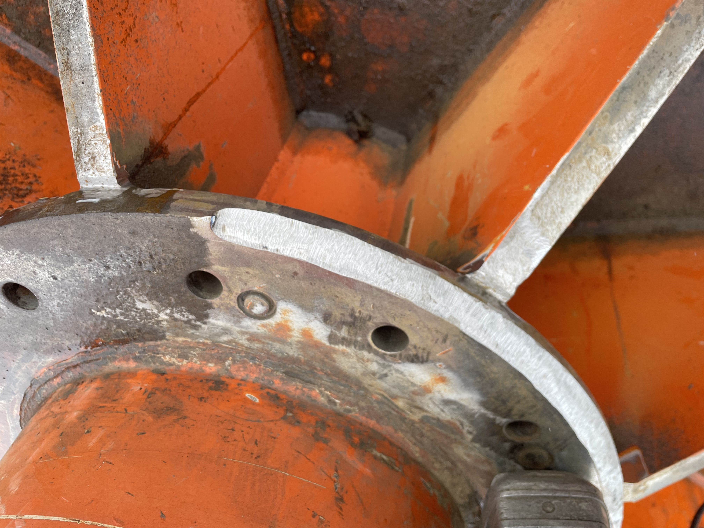
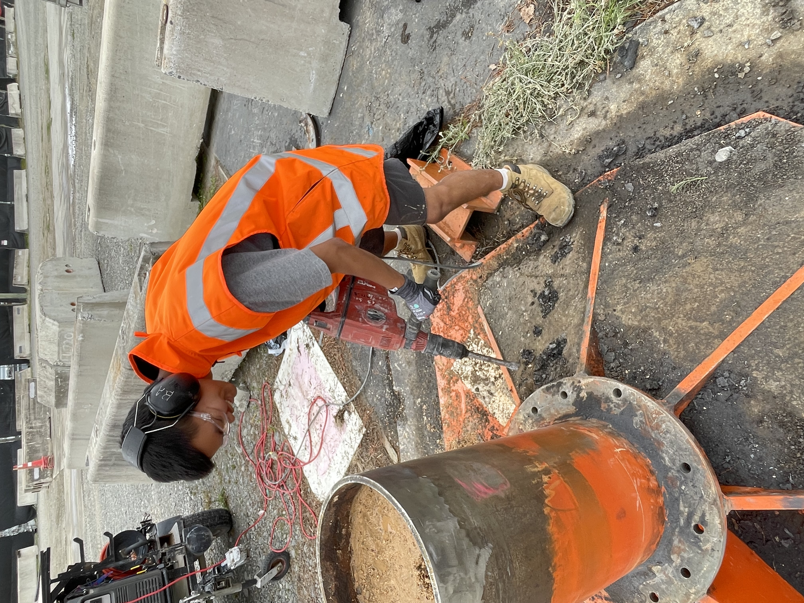
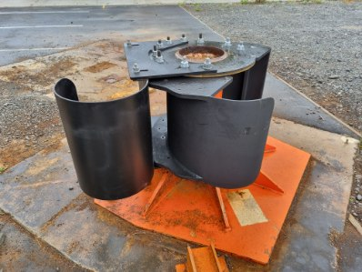

R&D / Test Engineering
Marine Snapback Research & Design
My main project during an R&D internship at Holmes Solutions, a Christchurch engineering consultancy. Mooring lines under tension can part and recoil violently, and how sharply a line bends over a fairlead or bollard, its D/d ratio, has a large effect on how much load it can really carry. I investigated that effect and designed an upgrade to the snapback test apparatus so it could test ropes at more realistic and safer bend geometries.
Research
- Reviewed published research and industry guidance on how the D/d ratio affects mooring rope strength, efficiency and fatigue life, and how it ties into snapback risk.
- Analysed previous in-house test data and compared the measured rope behaviour against published bending-efficiency theory and the capstan friction relationship.
- Found that the bend geometries common in service can pull rope strength well below the idealised predictions, and identified friction across the bollard as a parameter that is not yet fully understood and worth investigating further.
- Set a target geometry in line with OCIMF MEG-4 guidance, and authored a research summary that defined the engineering problem, performance targets and constraints for the apparatus upgrade.
Design and verification
- Assessed the existing apparatus and defined its load constraints, then flagged a non-conservative capacity check on the revised load case with my own calculations and escalated it for structural review, rather than assuming the existing foundation would carry the new loads.
- Proposed and developed an interchangeable bollard-sleeve concept that bolts onto the existing structure, chosen for ease of manufacture and maintenance and so a range of bend geometries can be tested on the same base.

- Carried the capstan friction finding from the research through into the design, using free-body analysis to account for the tension imbalance across the bollard rather than assuming the load was symmetric.
- Verified the concept with hand calculations (bolt shear, bearing stress, preload loss, plate bending) as structured safety checks to a comfortable margin, and used SolidWorks FEA to compare design iterations and identify stress concentrations before detailed verification. I picked up the FEA workflow on the job.
- Produced a staged construction and installation plan.
- All designs and calculations were reviewed and signed off by senior engineers.
Fabrication and install
- Supported fabrication of the sleeve, and ground the weld bevel on the existing bollard flange by hand to prepare the mating surface.

- Prepared the weld joint and surrounding surfaces; the structural weld joining the sleeve to the bollard was completed by a certified welder.
- Broke out the tarmac around the base with a breaker to clear the footprint for the install.


Took the upgrade from research and problem definition through concept, verification and drawings to fabrication and install. First round of full-scale testing has since been run. I am a co-author on the resulting technical paper, to be presented in August 2026.
Learned
- Structural verification in industry is about proving a comfortable safety margin on the upgrade, not chasing an exact number. On a ground-based rig you can buy that margin with steel, which does not transfer where mass or cost binds.
- I learned to lock in build decisions earlier. I spent too long refining the design and missed the build stage I wanted to oversee.